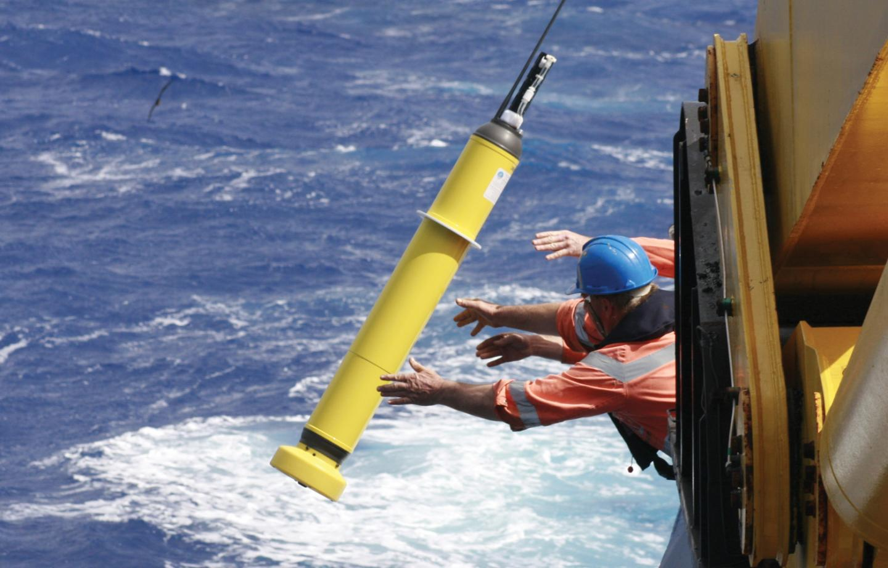

Welcome to my webpage! I am a Statistics PhD student at UCLA working with Karen McKinnon on problems in environmental statistics. In particular, I am working on the application of spatial statistical modeling to Argo data in order to better understand how ocean heat content is changing in response to anthropogenic global warming. Prior to joining UCLA, I received my BS and MS degrees in Statistics from the University of Chicago advised by Michael Stein, where I worked on computational techniques for Gaussian process modeling. Descriptions of my past and current research projects can be found below.
Research
Bayesian Estimation of Ocean Heat Content
The goal of this project is to better understand the uncertainty in ocean heat content estimates derived from Argo profile data by using a non-stationary global Gaussian process model under a hierarchical Bayesian framework. Modeling the complex non-stationarity of the ocean's correlation structure invovles the estimation of a continuous parameter field. The Bayesian method will allow for uncertainty in the estimation of parameter values to be incorporated in the overall uncertainty in estimating ocean heat content. This project also involves the development of computational techniques to make Bayesian methods feasible on a dataset as large as the Argo dataset.
Below is a preliminary display of the posterior distribution of the continuous parameter fields as explored by a Metropolis-Hastings sampler, including the burn-in period and thinned by twenty iterations.
Investigating Sampling Bias in Argo Temperature Profiles
Most statistical treatments of Argo data assume the exogeniety of observation locations and the oceans' temperature and salinity fields. However, the location of Argo floats is driven by ocean density gradients at 1,000m, which themselves dependent in part upon temperature. The goal of this project is to investigate whether this relationship is strong enough to create bias in traditional estimations of ocean heat content. As the 'truth' can necessarily not be known from the Argo data itself, I am investigating the use of ocean circulation model to investigate the physical plausibility of a correlation between Argo sampling locations and temperature.

Computationally Efficient Spatial Likelihood Calculations using Rskelf Factorizations
Recursive skeletonization factorizations, or rskelf factorizations, are a computational technique for computing Gaussian process log-likelihoods by compressing the off-diagonal blocks of the covariance matrix. Unlike log-likelihood approximations where the accuracy is dependent upon assumptions for the underlying process, the accuracy of rskelf factorizations can be controlled with a customizeable tolerance parameter, and violations of the assumptions will instead lead to a longer runtime. Under mild assumptions on the covariance function, rskelf factorizations have an asymptotic runtime of O(n^3/2), making them highly attractive for modeling a large variety of spatial processes where a large amount of data would otherwise render direct likelihood calculations infeasible. In the following publication we demonstrate the practicality of these techniques on a large ozone concentration dataset collected from polar-orbiting satellites.